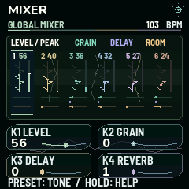
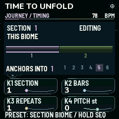
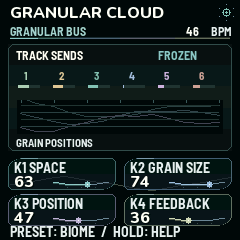
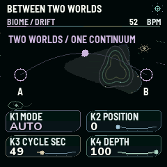

Stop playback and hold HOME. Choose one of 14 dreams with K1, a duration with K2, a pace with K3 and a room with K4. REC resets that dream’s adjustments. Press PLAY to begin or end the dream. In LOOK / STARTUP, set K1 MOTION to LIVING for animation. Read the illustrated Itinera walkthrough.
Chapter 01
Start here
AtlasBrowser
From the first note to a saved sound
Turn MASTER down, connect power or USB, then bring the volume up gently.
Tap HOME to reach BIOMES. Turn K1 for a family and K2 or PRESET to browse. Press SEL to load Saltglass Drift, then PLAY.
Return to Live Atlas with HOME. Raise Space a little and listen for the shared granular cloud. Try Motion and Density one at a time.
Open Tracks with HOME. Turn SELECT to highlight a voice, play the keys and press SEL to mute or unmute that voice.
Press PLAY to stop, select Internal clock in MIDI / Performance, then save an edited copy to an empty User Biome slot.
What the instrument stores
A Biome includes sounds, rhythm, harmony, effects, modulation and Journey settings. A Tone is one sound preset. Save the full Biome to keep the relationships between its tracks. Captured audio in the granular buffer is temporary.
How to read this manual
K1 to K4 are the four parameter knobs on the current screen. SELECT is the track encoder. SEL is the confirmation or mute button. Tap a function key repeatedly to cycle its screens. Hold a function key for on-device help. Menu names below match the firmware. The core routes apply to Mutable Dreams 2.0 and 2.1 for the M-VAVE FM-1.
Chapter 02
Walkthrough I - play a Biome
AtlasBrowser
Follow along on the FM-1
Use headphones or the FM-1 speaker at a comfortable level. Under GLO / MIDI Performance set K1 to Internal. Under GLO / USB Audio turn K1 right if local audio is muted.
Press HOME until BIOMES appears. Set K1 to All. Find Saltglass Drift with K2 or PRESET and press SEL. If the change guard opens, cancel with HOME and save work you want to keep before retrying.
Press PLAY, then HOME to reach Live Atlas. Set Density lower until there is space between notes. Turn Colour left a little, then raise Space. Wait several beats for the texture to settle.
Press HOME to reach Tracks. Turn SELECT to choose the first active track, then play a note on the keys. Press SEL once to hear the arrangement without that track. Press SEL again to bring it back.
Press ARP to lock the current random seed. Listen to how tracks with different lengths continue to cross. Use REC on the Atlas to try a variation. ENV returns to the previous one.
What you should hear
The transport keeps playing the same Biome. The events and their interaction keep changing. For a Biome that changes sections by itself, load Pearl Fern and listen to both parts before coming back here.
Chapter 03
Walkthrough II - write a part
Grid

Mixer
Turn a sound into a loop
Stop PLAY. Choose a synth track with SELECT. From a non-SEQ page, tap SEQ to enter Rhythm. Keep tapping until SEQUENCE / 32 STEPS. Set K1 to On and K4 to 12. Set K2 to step 1.
Tap REC until Step entry is active. Play four notes on the built-in keys. Use K2 to move to an empty step and enter another note. Tap REC through Live to Off.
Tap SEQ to Step / Expression. Raise velocity for one accent. Lower the gate on one step to make it short. Use chance below 100% on a single step. Press PLAY and let the 12-step line turn against another track.
To put a fill on the next bar, continue through SEQ to the Grid, Phrase Tools and Step Rules. Choose a synth track and step with K1 and K2. Set K3 to Fill Only, then press SEL while playing.
Open EDIT / Global Mixer and send a little of the chosen track to reverb with K4. On FX / Shared Space, set the return and tail. If the new part masks the rest, lower the track level before raising the effect.
What you should hear
The recorded notes repeat at your own length. The fill step appears for one queued bar. A small room send connects the tracks while their dry attacks stay audible.
Chapter 04
Walkthrough III - finish a take
JourneyUsb
Arrange, keep and record what you made
Stop PLAY. From Step Rules, tap SEQ for Journey Arrange. Set K1 to Loop, K4 to 2 sections. Set section 1 to THIS BIOME. In section 2, choose a complementary factory Biome.
On Journey Timing set each section to four bars and one repeat. On Journey Anchors select section 2 and carry the voice you recorded. Press PLAY and listen for it to survive the change. Set Arrange to Off at any time with transport stopped if you want one evolving Biome instead.
Stop. From HOME Tracks open GLO / User Banks. Use K2 to select Biomes and K1 to choose an empty slot. Use K4 and PRESET to enter a name, then SAVE. Turn K3 right to recall it after any later edit.
Connect USB to your computer. In your 44.1 kHz DAW project set the FM-1 as input. Arm inputs 1–2 for the complete mix. For individual voices arm six mono tracks on inputs 3–8. Record at least two Journey sections.
Open the Live Device Editor and export both the current patch JSON and the saved .mddb banks. Verify your new slot can be recalled before you install another firmware.
What you should hear
The recording preserves the full piece on the stereo track. The six mono tracks give you independent sources for the mix. If you used Rack Mode, the kit is on input 6 and inputs 7 and 8 are silent.
Chapter 05
Home and performance
AtlasBrowser
HOME
LIVE ATLAS / 2.0
K1 Density · K2 Motion · K3 Colour · K4 Space
Density changes how often events occur. Motion increases note movement. Colour shifts brightness. Space controls the granular return. Active voices animate the Atlas. Use PLAY to start or stop the transport and MASTER for output level.
HOME
LARGE TRACKS
SELECT voice · SEL mute · K4 Touch on supported voices
Muted voices dim. Use K4 to adjust how Willow Bow, Aero Flute and Felt Mallet respond to playing strength. The keyboard plays the selected voice. OCT− and OCT+ shift only the live keyboard. SAVE with transport stopped keeps the setting.
HOME
BIOME BROWSER
K1 family or Favorites · K2 or PRESET Biome · SEL load · REC favorite
Browsing lets you inspect candidates. The change guard asks before discarding unsaved edits. SEL confirms, HOME cancels, and SAVE takes you toward saving. Stop and SAVE to retain favorites. PRESET from the Atlas is also a Biome shortcut.
Make and undo variations
ARP locks or unlocks the random seed. Tap REC on the Atlas to vary the patch. ENV returns to the previous variation. Stop leaves effect tails to decay. REC on System or MIDI / Performance is Panic and clears notes and tails. REC has other roles on recording, bank and mapping screens.
Chapter 06
Shape and mix voices
Mixer
EDIT
SOUND
K1 Tone · K2 Harmonics · K3 Shape or Decay · K4 Level
Select a voice, then turn ALGO for its synthesis model or PRESET for a Tone. Tone and Harmonics shape colour and overtones. Shape controls the character of models that offer it. Drum models use Decay. The on-device help changes for several models.
Low-pass modes LP12 and LP24 soften brightness. LPG darkens as the sound decays. Off bypasses the filter. Breathe adds slow filter movement. Start with little resonance on bright sounds.
Attack controls the onset and Decay controls the tail. Melodic voices can sustain from MIDI. Percussive models also shape the tail internally. Increase Attack on pads and lower it on plucks.
EDIT
MIX / NOTES
K1 Granular send · K2 Base note · K3 Pan · K4 Clock division
Set the voice position in stereo and its pitch centre. The division slows the selected voice independently. The granular send feeds the shared buffer.
Turn SELECT to move between tracks. SEL mutes or unmutes the selection. Sends follow the voice level. The shared effects also need an audible return on their own pages.
The Euclidean generator distributes hits through the pattern. Length sets the cycle. Rotation moves accents around it. Probability makes eligible hits intermittent. Try five hits over twelve steps against a sixteen-step track.
Swing delays alternate subdivisions. Ratchets divide one hit into one to four repeats. Accent changes its emphasis. The division belongs to the selected track.
SEQ
BASS / MOTIFS
K1 Off / Euclid / Step · K2 Motif · K3 Glide · K4 Base note
Use Euclid to play the motif with generated hits. Step lets the phrase drive playback. Glide smooths the movement between pitches. Any synth voice can use this mode.
SEQ
PHRASE / NOTES
K1 Phrase step · K2 Note offset or rest · K3 Accent · K4 Probability
Edit one of sixteen phrase positions. A rest leaves the position empty. Scale snapping still applies. This page sets the track’s accent and probability. Use Step Expression for per-step dynamics in the 32-step sequencer.
Each synth track has its own sequence. The display shows a rest at the bottom of the note selector. Tap REC to cycle Step entry, Live overdub and Off. In Step, play the keyboard or routed MIDI to enter notes. In Live, start PLAY and play into the moving sequence.
SEQ
STEP / EXPRESSION
K1 Velocity · K2 Gate · K3 Chance · K4 Generator
Velocity changes emphasis. Gate changes duration. Chance governs the selected step. Generator choices such as Sparse, Arp, Pulse and Drift replace this track’s sequence. ENV can undo the edit.
Try Forward, Reverse, Pendulum, Orbit or Seed. Offset changes which step is heard first while keeping the stored order. Feel adds velocity variation. REC enters the sounding step while live recording.
SEQ
SEQUENCER / GRID
K1 Track · K2 Step · K3 Note or kit pad · K4 Length
Compare the six rows, then press SEL to open the selected track’s editor. REC cycles recording. In Rack Mode, the kit row opens its pad sequencer. Tap SEQ again for Phrase Tools.
Chapter 09
Phrase edits, fills and harmony
Grid
SEQ
SEQUENCER / TOOLS
K1 Step or Phrase · K2 Position · K3 Amount · K4 Action
Set the scope before choosing an action. Copy and Paste transfer the chosen scope between synth tracks. Transpose shifts pitches. Phrase scope adds Reverse, Accent and Articulate to change order, velocity and gate lengths. Open a track before recording. Press SEL to apply the chosen tool and ENV to undo the last operation.
SEQ
SEQUENCER / FILL
K1 Track · K2 Step · K3 Rule · K4 Note
Rules decide which passes can play the step, including First, Every second and Fill. During playback press SEL to queue a single fill bar. Press SEL again before it starts to cancel it. Fill steps play only inside that bar.
GLO
HARMONY / GLOBAL
K1 Root · K2 Scale · K3 Transpose · K4 Tempo
Root and scale set the pitch pool, transpose moves the whole patch, and tempo sets the internal clock. Choose a related scale when you want the same rhythmic idea to feel different. External sync can drive playback independently of the internal BPM.
GLO
CHORD JOURNEY
K1 Progression · K2 Bars per chord · K3 Follow or Stay · K4 Root movement
Pick a four-chord progression and allow one to sixteen bars for each chord. Set Follow on the selected voice to move it with the chords. Use Stay on percussion or a held drone. K4 switches the root movement between Nearby and Original. Set the root and scale on Harmony. This progression works with Journey Arrange Off.
Chapter 10
Arrange a Journey
Journey

Timing
SEQ
JOURNEY / ARRANGE
K1 Off / Once / Loop · K2 Section · K3 Biome · K4 Section count
Stop playback to edit. Choose up to eight sections. THIS BIOME takes its source from the current saved sounds. Other positions can recall factory Biomes. PLAY starts the first section. Once finishes after the last section. Loop returns to the start.
Set one to sixty-four bars per section. A bar is sixteen sixteenth notes. Repeats extend that section. The pitch offset is ±24 semitones. All sections follow the home tempo.
Carry preserves the selected incoming voice and its pattern. The new root and scale still apply. Across kit changes, only tracks 1–3 can be carried. Live mutes and macros reset on Stop.
Reproduce the factory example
Load Pearl Fern, press PLAY and hear Hands Into Clouds enter while track 5 carries the bass. Pearl Fern, Chapel of Fog and Copper Step ship with Loop. The other 269 factory entries, including Blank, ship with Off. Save any preference and section edits to a User Biome.
Chapter 11
Granular and spatial effects

GrainsMixer
FX
GRANULAR BUS
K1 Return / Space · K2 Grain size · K3 Position · K4 Feedback
This is one shared audio buffer. A track send changes how much of that track goes in. Size changes each fragment’s length, Position chooses where to read, and Feedback recirculates material. Press LFO to freeze, then press it again to resume input.
Transpose the grains by up to two octaves and choose forward or reverse playback. Ducking reduces the other tracks when the chosen source plays. Choose 0 to turn the duck source off. Set its release in System.
The delay spans 40–350 ms. Feedback adds repeats. Reverb tail controls decay. Use the Mixer to choose which voices feed delay or reverb. Start low and raise the return gradually.
Add a little noise to the shared buffer for texture. The selected track’s send remains separate. Freeze holds the recorded buffer and stops new noise and track inputs from entering.
Marbles adds remembered variation to phrases in Euclid or Step. Tides moves the selected LFO A target. Warps blends nonlinear colour. Start with one low-depth change to hear each contribution.
FX
TIDAL / LFO A
K1 Target · K2 Wave · K3 Depth · K4 Cycle
Assign slow movement to a synth voice. Try a soft swell on level or gentle motion on pan or filter. The cycle spans 0.5–20 seconds. Grain, FX and Warps targets need the corresponding base signal.
FX
TIDAL / LFO B
K1 Target · K2 Wave · K3 Depth · K4 Cycle
Set an independent movement for the same voice. Use a different cycle from A to avoid repeating the same motion together. Soft Swell keeps the peak within the original level. Kit pads use their own controls.
Set up one of four connections. For example, choose a percussion track as the source, a sustained track as destination and Pan as target.
FX
LINK / MOTION
K1 Slot · K2 Signal · K3 Signed depth · K4 Hit release
Select Hit, Envelope or LFO A/B from the source. Raise depth from zero and listen. Negative depth reverses motion. Hit release sets how quickly a hit fades from the destination. Muted sources stop sending motion.
Chapter 13
Drift and lo-fi kits

Drift
FX
BIOME / DRIFT
K1 Off / Manual / Auto · K2 Position · K3 Cycle · K4 Depth
Drift blends captured sound parameters from A to B. In Manual, move K2. In Auto, set a 10–300 second round trip. Lower depth for a smaller change. Capture both scenes first.
FX
DRIFT / SCENES
K1 Capture A · K2 Capture B · K3 Depth · K4 Mode
Turn Drift Off. Capture A, change tone, filter, decay, mix or macros, and capture B. Turn Drift on afterwards. ENV can undo the last capture.
GLO
LO-FI / RACK MODE
K1 Rack mode · K2 Kit · K3 Pad · K4 Hiss
Rack mode provides three synths and an eight-pad kit on track 4. Play its pads on the keyboard. The eight pads repeat across the keys. REC auditions the selected pad from kit edit screens.
EDIT (track 4)
KIT / PAD COLOUR
K1 Tune · K2 Level · K3 Filter · K4 Tail
Set pad pitch up to ±12 semitones. Adjust the selected pad’s level, low-pass filter and sample decay. Each pad stores independent settings.
EDIT (track 4)
KIT / SENDS
K1 Pad · K2 Pad granular send · K3 Kit delay · K4 Kit reverb
The pad feeds the same granular tape as the synths. Track 4’s Mixer send sets the overall kit contribution. Delay and reverb sends apply to the kit.
SEQ (track 4)
KIT / 32 STEPS
K1 Step · K2 Hit · K3 Length · K4 Generator
Choose the pad with PRESET. Each pad has its own rhythm gates. REC cycles step entry, live overdub and Off. Save the full Biome to keep the kit and patterns.
Chapter 14
System and MIDI
Usb
GLO
QUALITY / SYSTEM
K1 Tempo · K2 ECO / FULL · K3 Duck release · K4 Reset peak
ECO uses lighter processing on dense sounds. FULL allows more resonator modes and grains. The CPU display shows the observed peak. REC is Panic. System shares its tempo with Harmony.
Motion controls display and light movement. K2 toggles the startup chime, K3 replays the animation, and K4 selects OFF, DIM or FLOW for button lighting. SEL switches colour polarity. Stop and SAVE to keep preferences.
Select Internal, USB, TRS or BLE clock. With an external clock, send MIDI Clock and Start from the source. Set each selected track to Off or channels 1–16. Input scale snap constrains played notes. CH16 CC16–19 can control the four live macros.
Stop before enabling the radio. To connect to a BLE MIDI peripheral, turn K2 to scan or browse, then K3 right to connect. For a phone or computer connecting to the FM-1, leave discovery mode and use its Bluetooth MIDI panel. Enable thru only when routing is intentional to avoid MIDI loops.
Chapter 15
MIDI Learn and recordings
Usb
GLO
MIDI / LEARN
K1 Slot · K2 Target · K3 Track · K4 Arm
Choose a slot, then turn K4 right and move a controller. Cross the current value to pick it up without a jump. REC clears the selected slot. Stop and SAVE to store the sixteen mappings.
GLO
MIDI / MAPPING
K1 Port · K2 Channel · K3 CC · K4 Enable
Restrict the mapping to USB, BLE, TRS or Any. Channel 0 means Any. Reserved CCs are skipped. Disable a mapping to preserve it without using it, or press REC to clear it.
GLO
USB AUDIO
K1 Local monitoring
Turn K1 left to mute speaker and headphones or right to restore them. USB recording continues. MASTER sets the stereo USB level. SAVE on this page keeps the preference with transport stopped and Internal clock selected.
Record six separate tracks in Logic or another DAW
Choose Mutable Dreams FM-1 as input and set the project to 44.1 kHz. Create six mono audio tracks, one each on inputs 3–8. Enable recording on all six, press PLAY and record. Inputs 1–2 give the effected stereo mix. The mono tracks are taken before pan and shared effects and use a fixed USB level. With Rack Mode on, input 6 carries the kit and inputs 7–8 are silent. Set MIDI input channels separately when using the FM-1 as a controller.
Stop and use Internal clock. Pick one of sixteen Biome slots or sixty-four sound slots. K4 moves the cursor and PRESET changes its character. SAVE stores to an empty slot. On an occupied slot, check the prompt and confirm with SEL to overwrite. REC requests clear and SEL confirms. Turn K3 right to recall. The factory library remains available.
Browser instrument and live editing
Open the 2.1 Web Studio in desktop Chrome or Edge. Start Instrument opens the independent browser synth. Use browser user banks for its own local storage. To edit the FM-1 instead, stop the standalone instrument, click Connect FM-1, allow MIDI and choose the device. The device editor sends changes to the FM-1. Disconnect when finished.
Export, import, back up and restore
Export the live patch as JSON for edits and transfer of the active sound. Use the editor’s import to load a compatible patch, then save it to the desired bank on the hardware. Use Back up all device banks for a .mddb file. Restore device banks checks and stages the file, then waits for SEL on the FM-1. HOME cancels the device prompt. A full restore replaces the stored user data, so back up the destination device first.
USB Screen Mirror
Open the mirror page in Chrome or Edge, connect with a data USB cable and grant Web MIDI. Choose the FM-1. Use the mirrored image as a window source in OBS and take audio from the device or DAW. If a transfer stalls, close the mirror and retry with the editor alone.
Chapter 17
Install, recover and diagnose
Before any firmware change
Save a .mddb bank backup and a separate JSON of the live patch. Keep the official stock firmware for your specific FM-1. Use a direct USB data connection and leave power connected until the installer confirms restart. Check the release page for the current UC25HQ80 test status. The SMK-37 version uses a separate build.
Browser installer, command line and M-UPGRADE
Use the 2.1 project installer in desktop Chrome or Edge, grant MIDI and select the FM-1. Follow its update and restart prompts. The release also supplies a Python USB-MIDI updater for the Mutable Dreams package. Use M-UPGRADE with supported official stock files. Follow the instructions supplied with each download.
Return to stock and restore
Choose the installer’s stock-return route and the official stock file that works on that unit. Returning to stock can erase saved Mutable Dreams data. After reinstalling a compatible Mutable Dreams build, restore .mddb via the Live Device Editor and press SEL on the FM-1. Recall a known User Biome to check the restore.
Troubleshoot by symptom
No sound: turn up MASTER, use Internal clock, unmute the chosen voice and turn on local monitoring. Unexpected section changes: check Journey Arrange. No MIDI device: try a data cable, allow MIDI, close other editor or mirror sessions and reconnect. Stereo only in the DAW: select separate mono inputs 3–8. Startup click: switch off the optional chime in Look / Startup and compare speaker and headphones on a cold start. A click at the power switch can come from the analogue circuit.
Chapter 18
Sound engines and scale choices
Choose a sound by how you want to play it
Start with Felt Mallet for a soft strike, Bow or Aero for sustained voices, and Skin Percussion for hand percussion. Use ALGO to change the selected voice’s engine. PRESET changes its Tone. The next section groups the algorithms by musical use. Hold EDIT on Sound to see that engine’s knob roles.
Play in a different scale
Harmony offers Chromatic, Minor, Major, Dorian, Minor Pentatonic, Major Pentatonic, Whole Tone, Phrygian, Ukrainian Dorian, Harmonic Minor, Double Harmonic Minor, Harmonic Major and Double Harmonic Major. Choose the root before shaping a chord progression. Try Ukrainian Dorian for a raised fourth against a minor third. Harmonic Minor adds a leading tone. Harmonic Major lowers the sixth against a major third.
A practical sound design pass
With effects low, audition a single voice at a modest level. Set its envelope, pitch, filter and pan. Raise just one send, listen in the full mix and make room for the next track. Save a Tone to reuse the voice and a Biome to preserve the whole mix.
Chapter 19
Engine reference
Percussion and strikes
PLAITS KICK makes a pitched low drum. PLAITS SNARE combines body and noise. PLAITS HAT makes short metallic ticks. SKIN PERCUSSION moves from palm to rim with Tone and Harmonics shaping the skin and its overtones. FELT MALLET softens the initial strike while its pitched body rings.
Resonators and strings
RINGS MODAL produces pitched, ringing partials. ELEMENTS STRIKE excites a resonating body with mallet, plectrum or particles. CEDAR STRING gives you a woody pluck with separate brightness, body and plectrum settings. WILLOW BOW sustains a string with bow pressure. COPPER BLOOM mixes ringing sidebands into a strike.
Oscillators and keys
PLAITS FM creates sidebands around a carrier. PLAITS VA covers classic oscillator colours. PLAITS HARMONIC balances a harmonic stack. SINE CHOIR layers gentle partials. ROUND BASS gives a soft low foundation. VELVET KEYS makes a rounded melodic attack. REED ORGAN adds pipe and reed harmonics, with gentle beating.
Pads, air and ensembles
MELLOW DRIFT makes a slowly moving soft voice. SATIN MORPH moves between smooth timbres. SPECTRAL BLOOM develops a spread of partials. BREATH TEXTURE adds airy noise. AERO FLUTE balances pipe overtones and breath. SILK ENSEMBLE spreads and drifts two side voices. VOWEL BLOOM sweeps through oo, ah and ee.
Chapter 20
MIDI messages and shortcuts
Performance messages
The assigned track accepts Note On/Off with velocity, Pitch Bend and CC64 sustain. CC11 controls expression. RPN 0,0 adjusts bend range up to ±24 semitones using CC6 and CC38. Reset All Controllers is CC121. CC120 silences the assigned voice and CC123 releases its notes. Keyboard and MIDI recording use the selected sequence and routed channel.
Direct control and recall
CC7 volume, CC10 pan, CC74 filter cutoff, CC71 resonance, CC91 reverb send, CC12 delay send, CC13 grain send and CC5 glide. On CH16 with the macro shortcut enabled, CC16–19 provide coarse Density, Motion, Colour and Space. Optional CC48–51 add fine resolution. Bank Select MSB CC0 plus Program Change selects a factory Tone for the routed track outside an active Journey. The slot index is bank × 128 + program. Use zero-based numbers as sent on the wire.
External timing and connection
Select USB, TRS or BLE in MIDI / Performance, then send Clock and Start, Continue or Stop over that input. Select Internal for standalone playback and saving. Enable BLE MIDI in Wireless MIDI before pairing. If notes double or hang, turn thru off, check channel assignments and use Panic on System or MIDI / Performance.
Navigation in one glance
HOME cycles Atlas, Tracks and Biomes. EDIT cycles sound shaping and mixing. SEQ cycles rhythm, patterns, tools and arrangement. FX cycles grain, spatial effects and movement. GLO cycles harmony, settings, MIDI, storage and Rack Mode. Holding a function key displays its help without applying the tap action.
Chapter 21
Operate the browser instrument
Start and play
Use Start instrument to enable audio, then Play for the transport. Try the featured starting points for Silk Estuary, Chapel of Fog, Cedar After Rain or a Lo-Fi kit. Choose a Biome in the Atlas, use Blank Biome for a clean start, and star favourites. Select a track in its list. The on-screen keys and the typing keys A W S E D R F G Y H U J play notes. OCT − and OCT + shift the range. Connect MIDI input brings in an external controller.
Use the panel while a pattern runs
Select an editor page and move its four controls. Use Tempo for the internal BPM and Master for overall level. SEL mutes the current track, ARP locks the seed, REC makes a variation and ENV undoes it. LFO freezes the granular buffer. Panic immediately releases notes and clears tails. Sound, rhythm, sequence, effects and motion controls follow the same roles listed in the device reference.
Save in the browser
Name and save to a free browser slot, load it later from the same browser, or clear a slot to reuse it. Use Export patch to save JSON independently of browser storage. Import patch reopens a compatible JSON. If a Biome change would discard edits, choose Keep editing, Open User Banks or Discard and load.
Use the FM-1 as the instrument
Choose Connect FM-1 to edit the actual unit. Back up all device banks exports .mddb and Restore device banks stages a replacement for confirmation on the synth. Return to browser releases the device. Use the dedicated mirror page to capture the physical display. The browser synth and device keep separate banks.
Chapter 22 / revised 14 November 2026
Answers to community questions
Save seems to do nothing
Stop playback, select Internal clock, then open GLO / USER BANKS from HOME Tracks or Biomes. Choose Biomes with K2 and a User slot with K1. Set the name using K4 and PRESET. Press SAVE. If that slot is occupied, read the overwrite prompt and press SEL to confirm. Recall that slot with K3 and verify the name and sound. A Tone save only keeps one sound; choose Biomes to save the whole composition. Back up before updating or restoring banks.
Can I overwrite or initialise a factory Biome?
Factory Biomes remain available in the built-in library. Edit one and save your version into a User Biome slot. For a clean starting point, load a Blank Biome and save the result there. You can overwrite or clear User slots. This is not a write into the factory library. The 2.1 User Bank route and the planned 2.2 live-list workflow are different.
Which kind of transition am I hearing?
A manual 2.1 Biome load changes the scene directly. BIOME / DRIFT moves between captured sound parameters; 10-300 seconds is the complete A-to-B-to-A round trip. Journey Arrange sequences sections; Journey Anchors can carry selected tracks across a section boundary. Itinera is the independent long dream performance reached by holding HOME. Set Journey Arrange Off for the original freely evolving single-Biome behaviour. Radio Studio on the Mac uses a separate two-voice crossfade; its controls do not change the FM-1 firmware.
MIDI channels are not separate audio tracks
MIDI sends notes and control messages. Assigning input channels 1-6 does not create six audio tracks in Logic. Record mono USB audio inputs 3-8 for the six voices; inputs 1-2 are the stereo mix. Use a 44.1 kHz project and the FM-1 as the audio input device. The request for per-track generative MIDI note output belongs to the private 2.2 development work, not this 2.1 reference.
Does an update require a detour through stock V15?
Use the installer and starting-version instructions supplied with the exact release. Do not return to V15 merely because a previous update used it. First export the live patch and all User Banks, check the detected FM-1 identity and keep the appropriate stock package for that unit. If the installer explicitly reports that it refused the update before transferring data, that attempt did not write the package. A zero-requests message alone does not identify the cause or prove a damaged flash. Record the complete message and USB identity before trying another route.
Newer flash chips, recovery and accessibility
New UC25HQ80 hardware needs a compatible package and tested storage path. A successful install or save is not a complete cold-start and recovery qualification. Check the current release notes and issue 12. If the unit has no USB or UBOOT detection, ordinary browser recovery cannot reach it: report that separately rather than repeatedly flashing. Screen-reader support likewise needs the matching build wordlist and an actual reader test. A wordlist download alone is not a complete accessibility qualification.
What belongs to the next update?
This manual covers the public FM-1 release 2.1. The 2.2 live list, Tone favourites, HOME mixer and revised page navigation are under development. They are not required to use this version. SMK-37 Elite is a separate board port; do not install an FM-1 package on an SMK-37.
Illustrated reference
FM-1 screen atlas
All 46 views from the 2.0 firmware renderer. Select a label to jump to its controls.